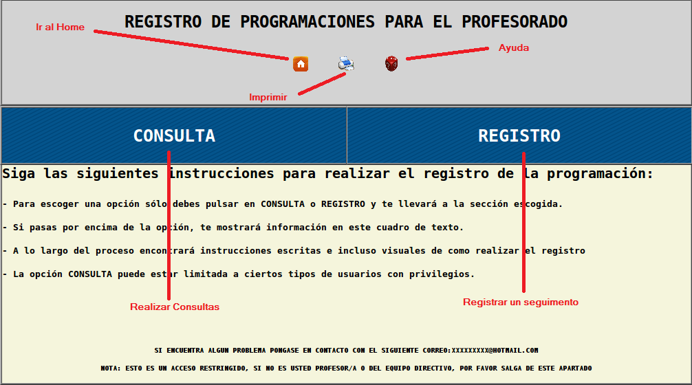
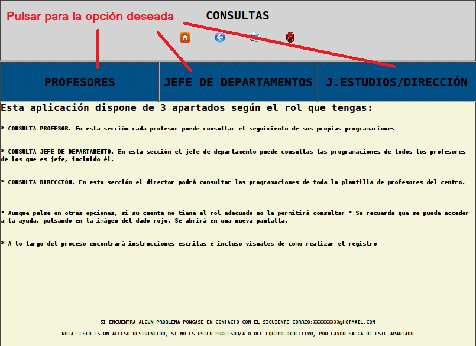
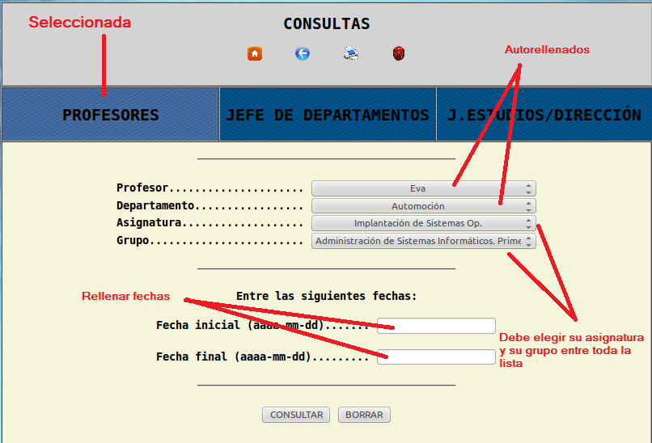
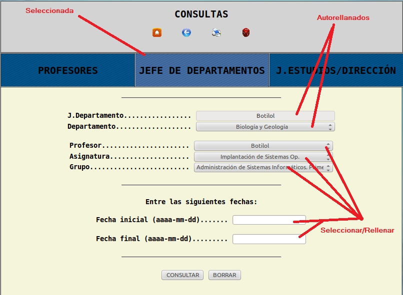
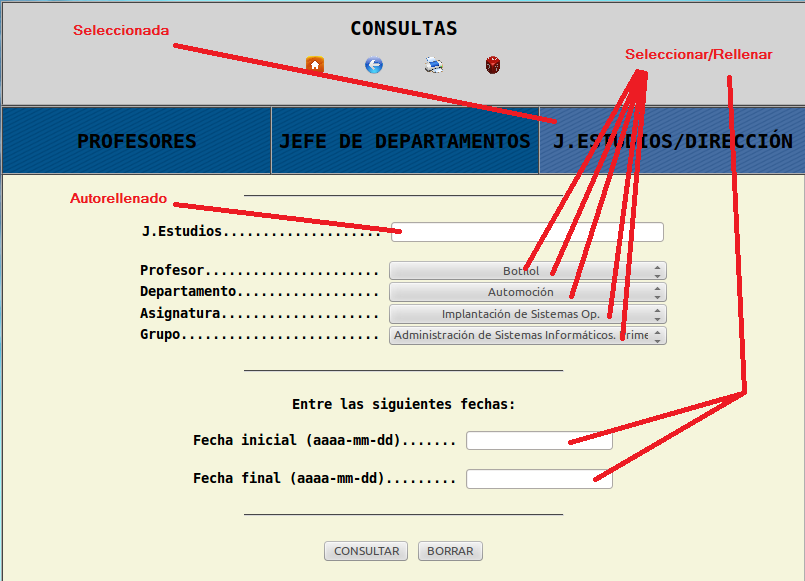
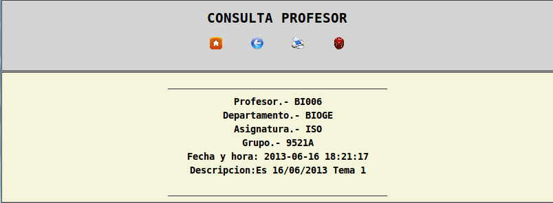
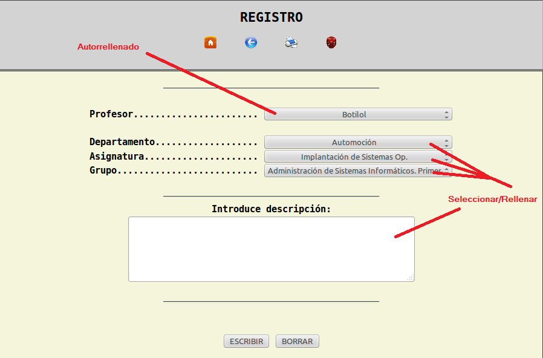
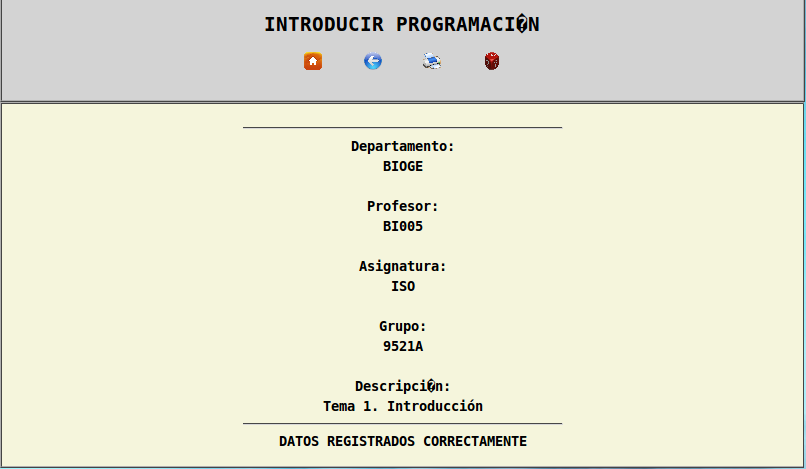

Página de Ayuda para el uso de la aplicación del registro de las programaciones de los profesores
- Común
- Este es el inicio de la web:

- Consulta
- - Al pulsar en consultas, le saldrá la siguiente pantalla, debe escoger la opción que corresponda a la consulta que desea hacer.

- Si pulsa la opción PROFESORES,la forma de rellenarlo es la siguiente:

- Si pulsa la opción JEFE DE DEPARTAMENTO,la forma de rellenarlo es la siguiente:

- Si pulsa la opción JEFE DE ESTUDIOS/DIRECCIÓN,la forma de rellenarlo es la siguiente:

- Al pulsar el botón consultar, le saldrá en una nueva pantalla las consultas realizadas, con el encabezado con los datos solicitados:

- Para realizar una nueva busqueda, pulse el botón la flecha de atras.
- Para salir, pulse el icono de la casa, e irá al index de la aplicación
- Registro
-
Para registrar un seguimiento, siga las instrucciones de la siguiente imagen:

-Pulse en Registrar
Le saldrá una imagen similar a esta:

- Para realizar un nuevo registro, pulse el botón la flecha de atras.
- Para salir, pulse el icono de la casa, e irá al index de la aplicación
Situe el ratón encima de las opciones para que le aparezca el contenido